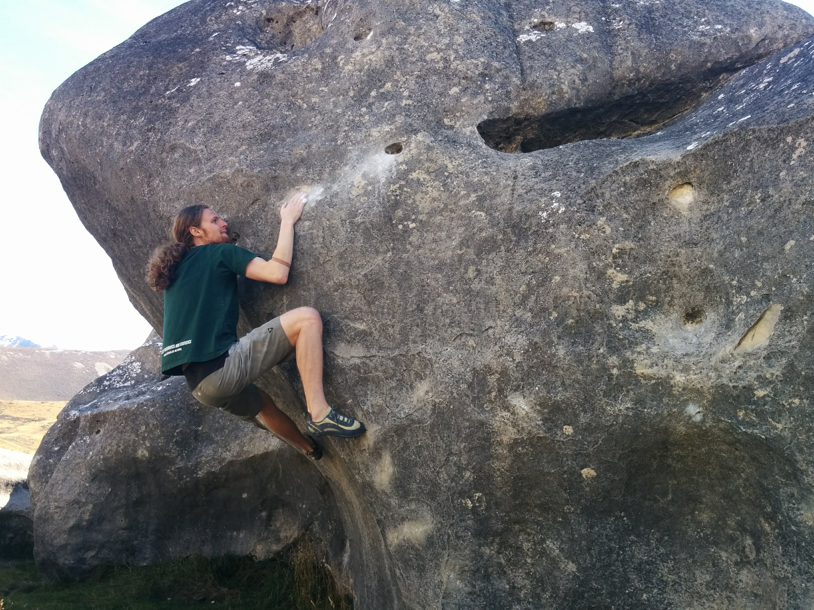

Home
| Josiah Jacobsen-Grocott |
| PhD student, Department of Mathemathics, University of Wisconsin–Madison |
| Advisor: Mariya Soskova |
Contact
| Email: | jacobsengroc@wisc.edu |
| Office: | 516 Van Vleck |
| 480 Lincoln Drive | |
| Madison, WI 53706 |
About Me
I did my BSc(Hons) in mathematics at Victoria University of Wellington, finishing in 2017. I also, completed the BSc requirements of the computer science major. It was during my undergrad that I was first introduced to mathematical logic. Since 2018 I have been a graduate student at University of Wisconsin–Madison. I am mostly interested in computability theory.
Outside of logic I am enjoy rock climbing. I used to compete a lot when I was younger and even represented New Zealand at the World Youth Championships a few times. I also enjoy reading fiction and have been writing an epic fantasy novel for the past few years.

Bouldering at Castle Hill, Arther's Pass, New Zealand.